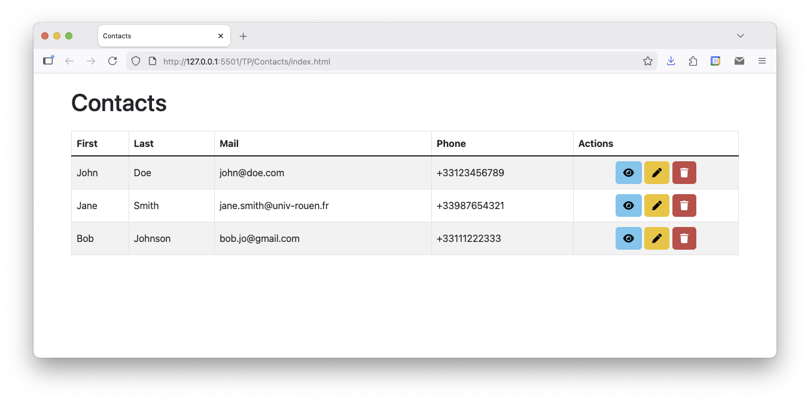
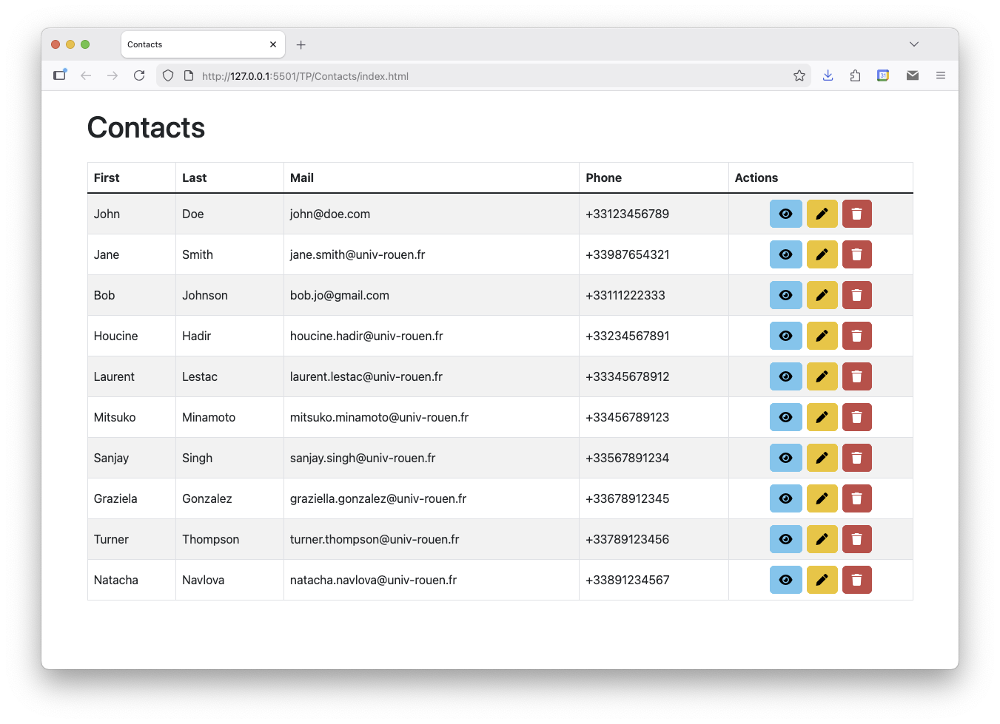
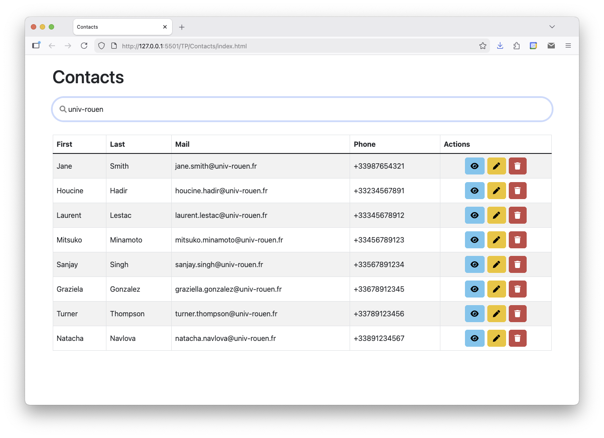

Web Dynamique côté Client
Travaux Pratiques
Les objets en JavaScript
Préparation
Le but est de créer une interface de gestion de contacts, similaire à celle montrée dans la figure ci-dessous.

Commencez par créer la page HTML qui hébergera l'interface et dans laquelle sera exécutée le code JavaScript qui prendra en charge les fonctionnalités:
- Créez une page
contacts.htmlqui contient - Un tableau HTML de 5 colonnes, comme montré sur la figure ci-dessus. Pour le moment, le tableau est vide à l'exception de la ligne d'en-tête qui contient les titres des colonnes.
- Une balise
scriptavec l'instruction suivante: - Créez un script
contacts.jsdans lequel est définie une fonctiondisplayContactsqui affiche un message dans la console. - Testez votre page HTML en l'ouvrant dans un navigateur et vérifiez que le message s'affiche bien dans la console.
document.addEventListener("DOMContentLoaded", displayContacts);
displayContacts à la fin du chargement de la page HTML.
Vous êtes libre d'utiliser Bootstrap et/ou d'ajouter vos propres styles CSS pour mettre en page votre interface.
Création de contacts en JS
La deuxième étape consiste à créer des objets JavaScript pour représenter les contacts. Un contact est caractérisé par:
- une propriété
firstnamequi contient le prénom du contact - une propriété
lastnamequi contient son nom - une propriété
emailqui contient son adresse mail - une propriété
phonequi contient son numéro de téléphone
- Dans votre script
contacts.js, créez 3 objets JS avec les propriétés décrites ci-dessus, et contenant les valeurs montrées sur la figure ci-dessus. - Créez un tableau JS rassemblant ces objets.
- Modifiez la fonction
displayContactspour qu'elle parcourt le tableau et pour chaque objet "contact", ajoute une ligne dans le tableau HTML. Pour chaque ligne, la dernière colonne contient trois boutons d'actions, inopérants pour le moment.
Note: pour parcourir un tableau en JavaScript, vous pouvez utiliser une boucle for..of (documentation) ou la méthode forEach (documentation).
Constructeur de contact
Pour faciliter la création de nouveaux contacts:
- Définissez une fonction constructeur
Contactqui prend en paramètres les informations d'un contact et initialise les propriétés de l'objet. - Modifiez le code de création des contacts pour utiliser ces constructeurs. Ajoutez 7 nouveaux contacts et affichez-les dans le tableau HTML, comme montré sur la figure ci-dessous.

Filtrer les contacts
On propose maintenant d'ajouter une barre de filtre en haut de la page, comme montré sur la figure ci-dessous.

Cette barre est un champs de saisie qui permet à l'utilisateur de saisir du texte pour filtrer les contacts affichés dans le tableau. À chaque cacratère saisi dans la barre, le contenu du tableau HTML se met à jour pour ne laisser afficher que les contacts ciblés. Un contact est ciblé si l'une de ses propriétés contient le texte saisi. Par exemple, dans l'image ci-dessus, seuls les contacts contenant "univ-rouen" dans leur adresse mail ont été conservés dans le tableau.
- Ajoutez la barre de saisie dans votre page HTML, au dessus du tableau de contact. Il s'agit d'un simple
inputde type texte, éventuellement inclus dans undivconteneur. - Dans
contacts.js, définissez la fonctionfilterContactsqui: - récupère le texte saisi dans la barre de filtre
- récupère l'élément correspond au corps du tableau HTML et le vide
- parcourt le tableau des contacts et pour chacun d'eux, vérifie s'il correspond au filtre
- met à jour le tableau HTML pour ajouter une ligne pour chaque contact ciblé
- ajoutez un écouteur d'événement sur la barre de filtre pour appeler la fonction
filterContactsà chaque saisie